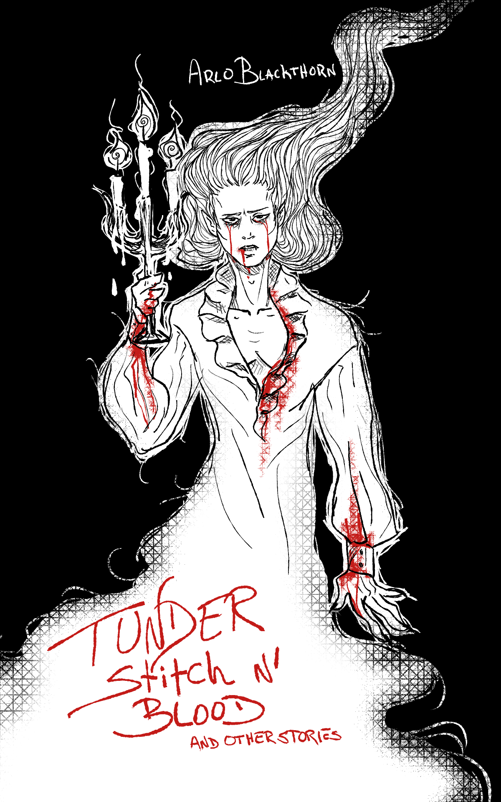
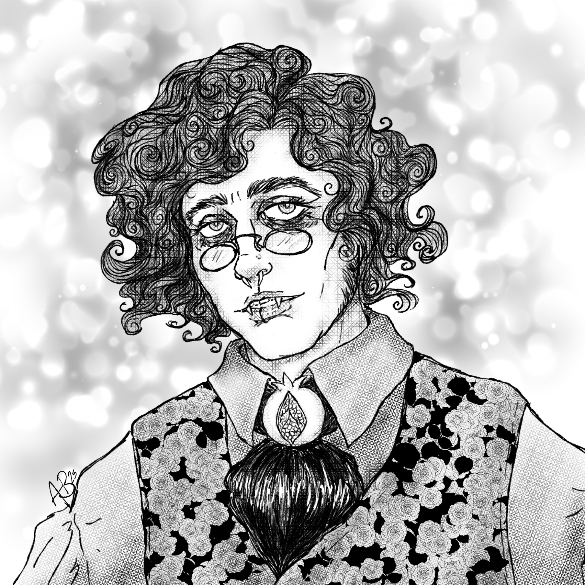

More works like these are published monthly in The Silver Backed Mirror news letter

A collection of stories from The Silver Backed Mirror, all refined and bundled together for your reading pleasure. Enjoy five short stories designed to make your heart pound. M/M with a mix of cis and trans characters.
This anthology contains:
Hell Fire in the Confessional — A priest’s slipping vow of celibacy has transformative consequences — 3.4k words.
Thunder, Stitch, and Blood — A roughed-up young man stumbles into an ‘abandoned’ castle looking for help with a dangerous stab wound — 5.6k words.
A Dagger at Midnight — Mixed messages and mixed feelings lead to mixing knives and kissing — 2.1k words.
Silver Scalpel — What would happen if you vivisected a vampire? Written from the vampire’s POV — 3.3k words.
Point of Pleasure — Two principal ballet dancers dress up and goof off after a late-night practice — 3.1k words.
17.3k words total!This anthology is pay what you want. Free to read and download BUT all additional funds raised from this project will go to helping me offset the medical expenses that insurance ended up not covering for my surgery. This edition comes with a PDF and ePub for your reading pleasure.
PDF and ePub available for download on itch.io exclusively!
Content & Warnings
Hellfire in the Confessional
3.3K words — M/M, cis x trans male, age gap, hierophilia - catholic priest, exophilia - demons, semi-public, sex in the confessional, mild oral, p in v sex, transformation kink. Modern / non distinct time period.
No major content warnings of note.
Thunder, Stitch, and Blood
5.6k Words — M/M, vampires, wound fucking - fingers and tongue, blood drinking, medical fetish, incorrect wound care, mild hand fetish, hurt / comfort. Fantasy renaissance.
CW: homophobia, physical assault, moderate gore, blood, graphic medical descriptions including stitches.
A Dagger at Midnight
2.1k Words — M/M, knife fight, unrequited feelings / misunderstanding, no sex. Late renaissance.
CW: Stalking, physical violence, mild blood
Silver Scalpel
3.3k Words — M/Group, operation theater, live dissection/ vivisection, voyeur/ exhibition, vampire, bound and gagged, dehumanization, non-con, multiple participants, medical fetish, organ caressing. Early Victorian.
CW: explicit gore, nonconsenting submissive, blood, general violence, depictions of graphic injury and internals.
Point of Pleasure
3.1k Words — M/M, established relationship, cross-dressing, ballet, anal sex, unprotected sex, public sex / implied voyeurism kink. Modern.
No major content warnings of note

About the Author
Arlo Blackthorn is a queer not-so-many centuries old vampire based in woefully sunny California. He received his BFA from The School of the Art Institute of Chicago and works across many artistic disciplines. Between gallery showings and pursuing a master's in history, he manifests extra hours in the day to write. When he’s not reading Gothic horror or hunched over his keyboard, you’ll find him with a gaming controller in hand and little black cat in lap. His debut novel Haunting the Scavenger is available now.